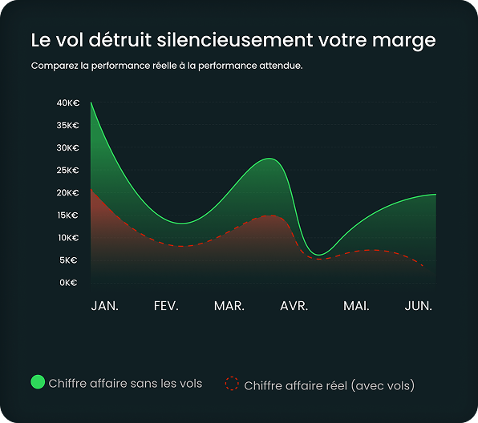
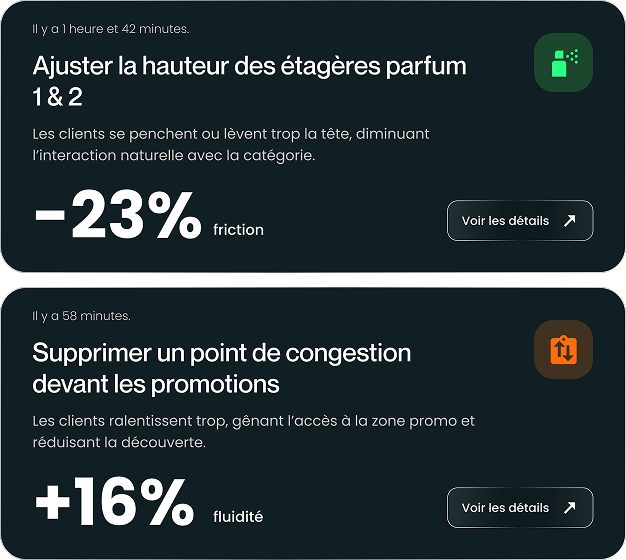

FR
Optimisez la performance de votre magasin.
Détection des vols en temps réel.

-42%
de pertes en 90 jours en moyenne
-70%
temps perdu en surveillance passive
+22%
d’efficacité en organisation rayon
30K€
de pertes évitées / an en moyenne

La réalité de tous les commerçants
Le vol grignote vos marges.
Sans détection active, la majorité des vols ne sont jamais interceptés. Les caméras seules ne suffisent pas.
Détection claire. Données claires. Résultat mesurable.
Les comportements suspects sont identifiés en temps réel et transmis au personnel. Impact immédiat et mesurable.

Comment ça marche ?
1.
L’IA qui analyse votre
magasin 24/7
magasin 24/7
Lynaris se branche sur vos caméras, détecte les vols en temps réel, analyse les traject oires, interactions, zones chaudes & froides, et bien plus.
Tarifs2.
Un hardware simple,
plug and play
plug and play
Nous installons un petit boîtier sécurisé relié à vos caméras. Aucun changement d’infrastructure : tout fonctionne en 30 minutes.
Tarifs3.
App mobile + alertes
instantanées
instantanées
Recevez les alertes de vols, comportements suspects et recommandations quotidiennes sur téléphone, montre connectée ou PC.
Tarifs4.
Suivi mensuel & support
sous 24h
sous 24h
Un conseiller dédié analyse vos résultats chaque mois, ajuste vos optimisations et reste disponible en moins de 24h via téléphone direct.
TarifsLynaris est actuellement opérationnel dans plusieurs pays européens
Déployable en Belgique, France, Pays-Bas, Allemagne avec une architecture sécurisée et conforme RGPD.

Les secteurs où nous opérons

Pharmacies
Lynaris agit dans les pharmacies indépendantes, les parapharmacies et les réseaux de pharmacies.
Solution
Cosmétique
Lynaris s’adresse aux boutiques cosmétiques, parfumeries et
enseignes beauty indépendantes.

Vente détail
Lynaris accompagne les commerces de détail spécialisés, indépendants ou franchisés, à forte exposition.
Solution